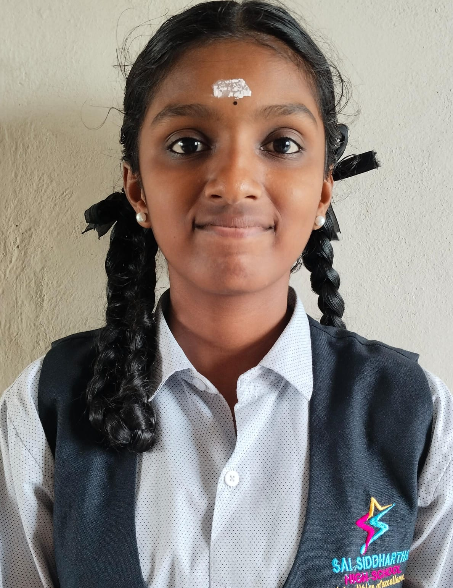
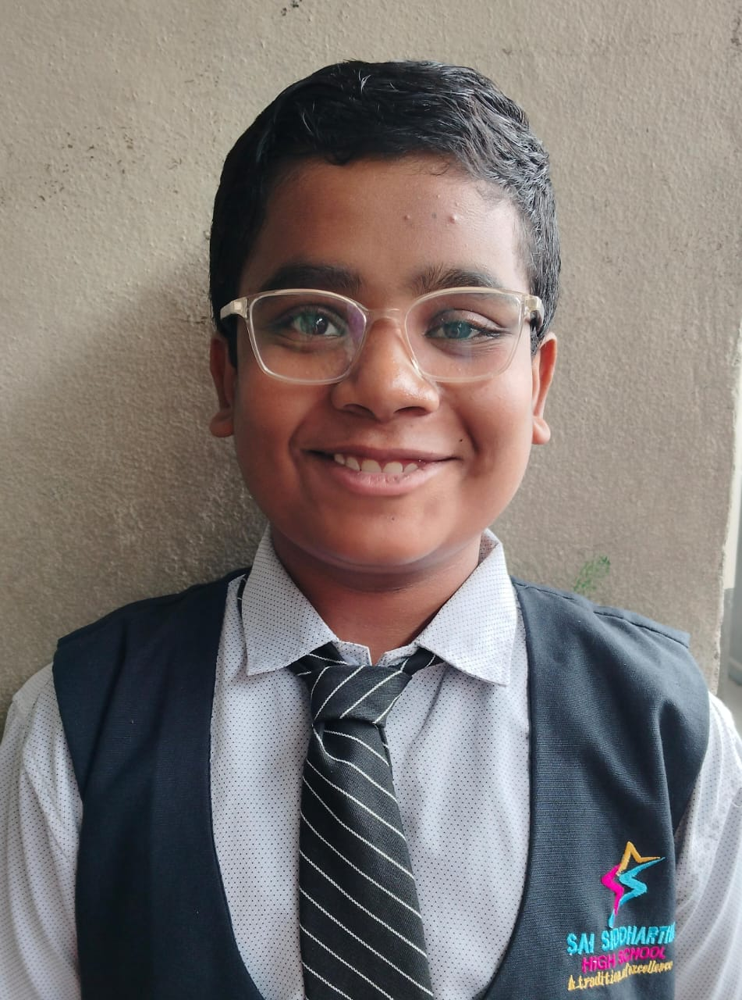
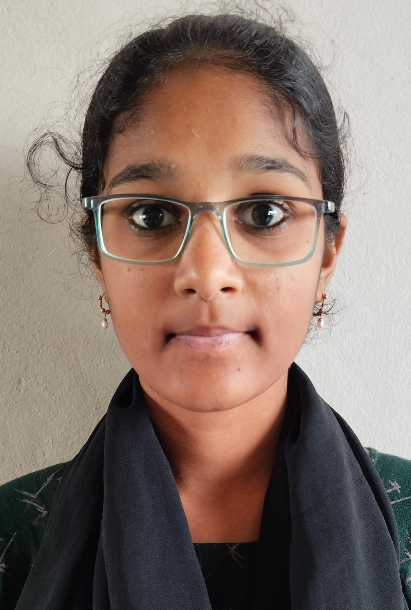
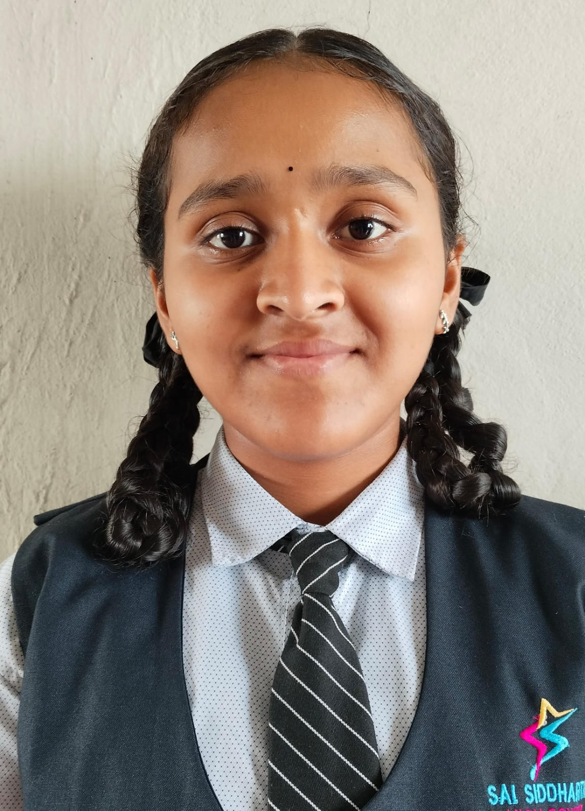
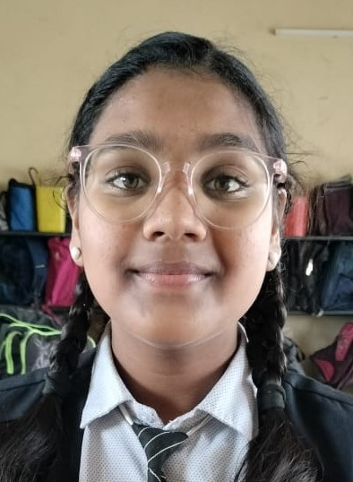

No gift on Earth is greater,
No treasure held above,
The joy that comes from knowing
A Mother’s Endless love.
It warms and it protects us,
And guides us from a far.
Shedding light upon us,
Like a bright and shining star.
In spite of how it’s tested,
It grows from year to year
Providing strength and comfort…
It” gently” draws us near.
There’s no love like a mom’s
Her heart is filled with care
With Christ as her example
Her savior’s love she’ll share.
A mother’s love is endless,
Not changing for all time
When needed by her children
A mother’s love will shine.

అమ్మా...! పేరులోని ప్రేమను, పిలుపులో మాధుర్యాన్ని నింపుకున్న అమృతమూర్తి అమ్మ. అమ్మ ప్రేమ అంత తియ్యనిదే కనుక, ఆ భగవంతుడు కూడా తనకు అమ్మ కావాలని కోరుకున్నాడు. ఈ లోకాన్ని సృష్టించిన ఆ దేవాది దేవుడు కూడా అమ్మకాడుపునే పుట్టెను, అంత గొప్పది అమ్మ ప్రేమ. అమ్మ ప్రేమ గురించి ఎంత చెప్పినా తక్కువే, అమ్మను ఎంత పొగిడినా తక్కువే... ప్రేమ, త్యాగం కలిస్తే అందులోనుంచి పుట్టుకొచ్చే దేవత అమ్మా!
అమ్మ...! ఆ పదంలో ఆప్యాయత, అమరాగం, ఆనందం, ఆత్మమత, ఆదర్శం, కమ్మదనం, తీయదనం ఇంకా ఎన్నో ఎన్నెన్నో ఉన్నాయి..! ఎంత చెప్పినా తక్కువే..! మాటలకు అందనిది అమ్మ ప్రేమ కడుపులో నలుసు వడిన నాటి నుంచి నవమాసాలు యోనిలో గడుపుతూ, ఎన్నో సంఘటనలు ఎదుర్కొని తన రక్తమాంసాలను పంచి అమ్మ పునర్జన్మ నెత్తుతుని బిడ్డకు జన్మనిస్తుంది. పొత్తిళ్ళలో బిడ్డను చూసి ప్రసవవేదన మర్చిపోతుంది. అమ్మ ప్రేమ అమృతమందుతో ఏమీ సాటదు.
అమృతం ఎలా ఉంటుందో కానీ, అమ్మ ప్రేమ ముందు అది దిగదుడుపే. ఆమె ప్రేమ ప్రపంచాన్నే మురిపింప చేస్తుంది. ఆ పదానికి అన్ని చోట్ల ఉండలేక అమ్మను సృష్టించాడంటారు. ఈ విషయం తెలుసుకోకుండా మనం మాత్రం జన్మవచ్చి, ఇంతవరకు చేసిన దేవతను కళ్ళముందు ఉంచుకొని, కనిపించని ఆ దేవుడిని కోసం గుళ్ళు, గొపురాల చుట్టూ తిరుగుతాము!
బ్రహ్మదేవుడు సృష్టించిన వీటిలో అమ్మను మించిన రూపం లేదు. వాస్తవానికి, బ్రహ్మ అమ్మను సృష్టించలేదు. అమ్మే బ్రహ్మను సృష్టించింది. అమ్మ లేనిదే బ్రహ్మ ఉండదు. మన భారతీయ సమాజంలో 'మాతృదేవోభవ' అని అమ్మకు అత్యంత గౌరవం ఇచ్చారు. ప్రపంచంలో ఎక్కడైనా సంస్కృతులు మారవచ్చు, కానీ అమ్మ ప్రేమ మాత్రం మారదు. మనకు ఏ చిన్న బాధ కలిగినప్పుడు కూడా, అమ్మనే తలుచుకుంటాం. నాన్న అని అనడం అట్లా కానీ, నాన్న ఎందరో మంచి వ్యక్తి, కానీ అమ్మ స్థానం అంత గొప్పది. అమ్మ అంటే ఒక అనుభూతి, ఒక అనుబంధం, ఒక ఆషయత్వం, ఒక ఆత్మమత!
బిడ్డకు బాధ కలిగిందన్న విషయం మనం కంటే ముందే అమ్మకు తెలుస్తుంది. ఆకలి అవుతుందన్న విషయం మనం చెప్పకుండా ముందే అమ్మ పనిగడుతుంది. తన బిడ్డ విజయాలు సాధించినప్పుడు అమ్మ ఆనంద పరవశమౌతుంది. అందుకే అమ్మ అంత గొప్ప దేవత...!
కనులు తెరచిన క్షణం నుంచి, బంధం కోసం, బాధ్యత కోసం, కుటుంబం కోసం, అందర్ని కనుపాపల తరువాయి; ప్రార్థన, ఆత్మీయత పంచి, తనవారికోసం అహర్నిశలు కష్టించి, వారిని సహించి, వారి భవిష్యత్తు గురించి ఆలోచించి, తన ఇంటిని నందన వనమవ్వించే అమ్మకు పాదాభివందనం!
పదాలు తెలపని పెదవులకు అమృత వాక్యాలు అమ్మ...! ఆమె చల్లని ఒడిలో మొదలైయింది ఈ జన్మ! ఓ మహా జానత్యాగం ఎన్నటికీ మరవలేము అమ్మ...!

ओ झीना झीना झीना रे उड़ा गुलाल
माँ, तेरी चुनरिया लहराई
झीना झीना झीना रे उड़ा गुलाल
माँ, तेरी चुनरिया लहराई
रंग तेरी रीत का, रंग तेरी प्रीत का
रंग तेरी जीत का है लायी लायी लायी
रंग तेरी रीत का, रंग तेरी प्रीत का
माँ, तेरी चुनरिया लहराई
जब-जब मुझपे है उठता सवाल
माँ, तेरी चुनरिया लहराई
झीना झीना रे उड़ा गुलाल
माँ, तेरी चुनरिया लहराई
जग से हारा नहीं मैं
ख़ुद से हारा हूँ माँ
इक दिन चमकूँगा लेकिन
तेरा सितारा हूँ माँ
माँ रे.. माँ रे..
तेरे बिन मैं तो अधूरा रहा
माँ रे.. माँ रे..
मुझसे ही रूठी मेरी परछाई

Student life is one of the most memorable phases of a person’s life. It builds the foundation for our future. During this phase, we don't just learn from books; we grow emotionally, physically, philosophically, and socially, while developing a strong character.
Student life is meant to teach us discipline and the importance of study, but it is also a time of great enjoyment. The struggles are relatively minor compared to later stages in life. We wake up early to prepare for school or college, and the excitement of rushing to the bus stop is part of the experience. Our mothers constantly remind us to hurry and not be late—a mantra for many.
Additionally, there are other exciting moments in student life. We sometimes forget to complete our homework and then pretend to search for the notebook when the teacher asks for it. As exams approach, the fun may seem to stop momentarily, but it doesn’t last long. One of the most exciting aspects of student life is going on picnics and trips with friends. Receiving an award for academic excellence is a dream come true for many students. To achieve such awards, one must be disciplined, punctual, respectful, responsible, and dedicated.
We enjoy ourselves and have a lot of fun with friends. Even waiting for exam results with friends can be an enjoyable experience. We may get curious about our friends’ marks, feel a bit jealous if they score higher, and so on. The anticipation for game periods or the introduction of a new teacher adds to the excitement. Student life is a vital part of everyone’s journey, influencing both our future and that of our country. Therefore, receiving the right guidance is crucial.
Our teachers (in my school) not only help us achieve our academic goals but also impart moral values, ethics, and share their life experiences. This guidance helps us navigate future challenges and handle stress more effectively. As the architects of the next generation, teachers also help us understand how society functions. Parents, too, play a vital role in shaping their children into responsible citizens. The time they spend with their children influences their character and future.
In student life, by setting clear goals, managing time effectively, engaging actively in learning, and embracing a growth mindset, we can pave the way to a bright future. Success is not solely about academic achievements but also about personal development, resilience, and adapting to life’s challenges. A strong foundation leads to a solid future, while a weak one cannot support a stable structure. In other words, student life helps us embrace essential human qualities. Many people don’t realize how lucky and privileged they are to have the opportunity for an education. For those who get the chance, it is important to make the most of it. Student life may not always be filled with happiness, but it is always worthwhile. It helps us grow along the path of life and acquire qualities such as honesty, patience, perseverance, and more.

What is Meant by Environmental Sustainability?
Environmental sustainability is the responsibility to conserve natural resources and protect the global ecosystem to support health and well-being now and in the future. Many decisions that impact the environment are not felt immediately, which is why a key element of environmental sustainability is its forward-looking nature. In fact, the Environmental Protection Agency defines it as "meeting today’s needs without compromising the ability of future generations to meet theirs."
What are the 6 Factors of Sustainability?
Six key factors of sustainability are:
Key Factors in Environmental Sustainability
Key factors in environmental sustainability include:
Elements of Environmental Sustainability
The three pillars of sustainability involve:
Environmental Issues
Nowadays, we face many environmental issues, including:
Various environmental protection programs are being practiced at individual, organizational, and governmental levels to establish a balance between humanity and the environment. Some current environmental issues that require urgent attention are:
Pollution Prevention Tips for Water Conservation
Noise Pollution
Noise pollution can result from various causes such as:
Methods to control noise pollution include:
Role and Importance of Nature
The natural cycle of our ecosystem is vital for the survival of organisms. We all should take care of all components that make our nature complete and avoid polluting water and air, as they are gifts of nature. As Albert Einstein said, "Look deep into nature and then you will understand everything better."
What is Greenery?
Greenery refers to plants that make a place look attractive. Simple ways to protect and conserve your plants include:
Benefits of Plants
Without plants, life on Earth would be impossible because they provide food for humans, pets, and wildlife.
Benefits of Water
Water:
Soil and Plant Relationships
Plants and soil benefit from each other. For example, legumes like peas and beans are known as nitrogen fixers that increase soil nutrients. Healthy soil supports plant growth, and plants help maintain soil quality. Thus, plants and soil have a close, interdependent relationship.
